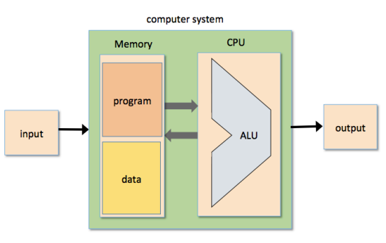
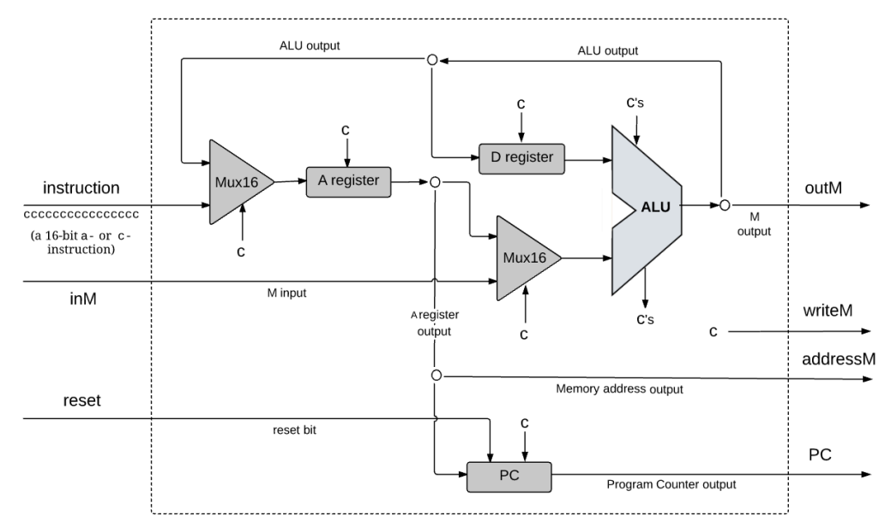
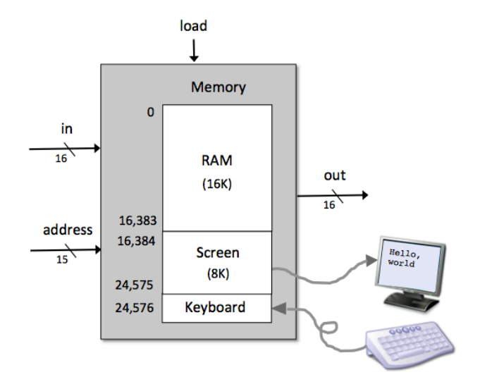
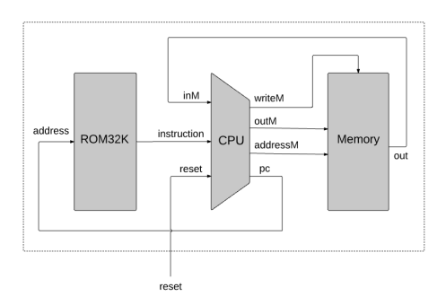

Nand2Tetris I - Computer Architecture
The computer that will emerge from this project will be as simple as possible, but not simpler.
终于来到了最激动人心的时刻：这一节我们将使用之前构造的所有芯片 (ALU, memory, counter...)，构造一个能够运行任意以 Hack assembly language 编写的程序的，真正意义上的 general-purpose computer！
下面我们介绍的构造方案基于本课程中定义的 Hack computer；因此在细节方面与现代计算机可能有所差异。
This article is a self-administered course note.
It will NOT cover any exam or assignment related content.
The Stored Program Concept
计算机之所以能从其他机械中脱颖而出，最为突出的原因在于其无与伦比的「万用性」(versatile)。但这万用性又从何而来呢？
- [theoretically] Church-Turing Thesis 指出图灵机是一种 universal computing machine。
- [practically] von Neumann architecture 是所有现代计算机的蓝图。
universal Turing machine (1936) 与 von Neumann machine (1945) 殊途同归，它们不约而同地 (存疑?) 提出了 stored program 这一天才般的想法。而这一想法又是那样的简洁与优雅：
在理论计算机领域中，Turing machine 占有很高的地位；但本节课是基于实践的。因此，我们将着重介绍 von Neumann architecture，并亲自见证这一诞生在近 80 年前的概念是如何指导我们今天的计算机设计的。
von Neumann architecture
von Neumann architecture 基于 central processing unit (CPU) 这一核心元件。它：
- interacting with a memory device.
- receiving data from some input device.
- sending data to some output device.
von Neumann architecture 的核心 - stored program concept 则体现在 memory device 中：it stores not only the data that the computer manipulates, but also the very instructions that tell the computer what to do.

Harvard Architecture
von Neumann architecture 有许多不同的 variants，其中 Harvard architecture 是比较著名的一个。
Harvard architecture 强调 data 与 instruction 在计算机中的分离储存；也就是说，data 与 instruction 各自占据 memory 中两块独立的连续空间，拥有各自独立的 data bus，两者井水不犯河水。
正因如此，在 Harvard architecture 中，CPU 能够同时获取 data 与 instruction；而 pure von Neumann architecture 则无法做到。
Hack computer 采用的是 Harvard Architecture；详见 machine language 一节中对 hardware platform 的描述，我们对 memory 作出了 data memory 与 instruction memory 这两种明确的区分。
Central Processing Unit
计算机的核心，当之无愧的艺术品。它把我们之前构造的所有硬件巧妙地联系在一起：

我们来看看 CPU 是如何完成经典的 fetch-decode-execute cycle 的：
Tick 时刻 (Tick 时刻 combinatorial chips 瞬间完成工作，sequential chips 仅仅向外输出其状态)：
- 外部控制器 (reset button): 向 CPU 中的 Program Counter (PC) 传入
reset。 - Mux16 (leftmost): 根据
c=instruction[15]选择将 instruction 或 ALU output 传入 A register 中。c=0: 该指令是一个 \(A\)-指令@val，表示将val存入 A register。c=1: 该指令是一个 \(C\)-指令dest=comp; jump。将上一循环计算的结果传入 A register。
- A register: 向外 (ALU,
addressM) 输出其状态A。 - D register: 向外 (ALU) 输出其状态
D。 - Mux16 (rightmost): 根据
c=instruction[12]选择将M或A传入 ALU 中。- 这是 Hack machine language 的规定：\(C\)-指令的第 12 位指定了计算式
comp中的其中一个操作数是A还是M(另一个操作数一定是D)。 - 若传入的指令是 \(A\)-指令，接下来的环节都没有意义；但也不会产生任何影响。
- 这是 Hack machine language 的规定：\(C\)-指令的第 12 位指定了计算式
- ALU: 根据
instruction的对应 bits 确定计算式comp并对传入的D与A/M执行相应的计算。向outM与 D register 输出计算的结果。输出 control bitszr与ng。 - PC: 向外输出其状态
PC。 - A register logic: A register 的 combinatorial logic 根据
instruction的对应 bits 计算出 \(C\)-指令中dest是否为A，用load_A表示并将该值传入 A register 中。 - D register logic: D register 的 combinatorial logic 根据
instruction的对应 bits 计算出 \(C\)-指令中dest是否为D，用load_D表示并将该值传入 D register 中。 - PC logic: counter 的 combinatorial logic 根据
zr与ng计算出 \(C\)-指令中 conditional jump 的 conditional，用load_PC表示并将该值传入 PC 中。 - 以上是所有 internal chips 在 tick 时刻的工作状态。就 CPU
整体而言，其与外部的交互：
- read from memory [stay tuned]: 向 CPU 输入
instruction, datainM。 - write to memory [stay tuned]: 向 memory 中传入
outM,writeM与addressM。
- read from memory [stay tuned]: 向 CPU 输入
Tock 时刻 (Tock 时刻 sequential chips 根据
load 改变自身状态)：
- A register: 根据
load_A决定是否将 Mux16 (leftmost) 传入的值进行存储。继续向外输出。 - D register: 根据
load_D决定是否将 ALU 计算的结果进行存储。继续向外输出。 - PC: 从 register A 中获取 address，从 PC logic 中获取 conditional
load_PC，从外部获取 reset。根据这三个值决定是否与如何改变自身状态之后继续向外输出。- If
reset=1,PC=[0]. (重启) - Else if
load_PC=1,PC=address. (执行jump) - Else
PC++. (正常的程序执行流程，自增)
- If
一切都联系起来了：在一个时刻内，CPU 在 A register 的指导下从 data memory 中获取数据，在 PC 的指导下从 instruction memory 中获取指令 ( fetch )，在 Mux16 等一系列 combinatorial logic 中完成解码 ( decode )，在 ALU 与 PC 中执行对应的指令 ( execute )。
除了感叹设计者的匠心独运之外，任何评价都是多余的。
Memory
memory 本质上是一个 24KRAM chip，由若干较小的 RAM chips 与对应的 combinatorial logic 组成。注意到 screen，keyboard 这些 IO devices 也是 memory 的一部分，这得益于 IO devices 与 RAM 底层实现的统一性 (见 hardware platform)。screen 与 keyboard 的地址是被 pre-defined 的。

以上是 Hack computer data memory 的示意图。这一系列的输入/输出对应 CPU 中的：
in: 对应 CPU 输出的outM，被写入的值（如有）。address: 对应 CPU 输出的addressM，访问/被写入的 memory cell 的地址。load: 对应 CPU 输出的writeM，决定是否执行写入操作 (若不写入，则单纯进行访问)。out: 对应 CPU 输入的inM，输出对应地址中的值。
CPU 具有对 data memory 的读/写权限，但 instruction memory 是只读的。因此 instruction memory 是一个仅有两个接口的 ROM chip。
in: 对应 CPU 输出的PC，根据PC指定的地址访问 ROM 中对应的指令。out: 对应 CPU 输入的instruction，输出对应地址中的指令。
我们仅仅能通过一些外部方式对 instruction memory 进行更改 (i.e., load a new program)；例如，替换整片 ROM chip。
Here it comes - Hack Computer!
即使是最原始，最简陋的原核细胞，也能在漫长的进化中构建出种种精妙的生物体；如果说 register 的出现象征着原核细胞的诞生，那么计算机的构建无疑是相当于人类诞生的奇迹。
然而，在 CPU 与 memory 已经构建完毕的基础上，这个奇迹显得那么的自然而简洁：
1 | CHIP Computer { |

注意这个特殊的外部输入 reset: 我们可以将其理解为重启键
(reset bottom)。每当我们按下重启键，PC 将被设定为
[0]；这代表着我们将中止目前的进程，从头开始执行 ROM chip
中存储的程序。
庆贺吧！Hack computer 就此诞生了！我们亲手创造了一个「奇迹」；它将能够完成 physical world 中一切能被观测到的计算任务，是名副其实的 universal computing machine。你之所以能够看到这篇文章，也是神迹的一部分。
Reference
This article is a self-administered course note.
References in the article are from corresponding course materials if not specified.
Course info:
Lecturer: Prof. Shimon Shocken, Prof. Noam Nisan.
Course textbook:
(Nisan N., Schocken S., 2008) The Element of Computing Systems: Building a Modern Computer from First Principles.